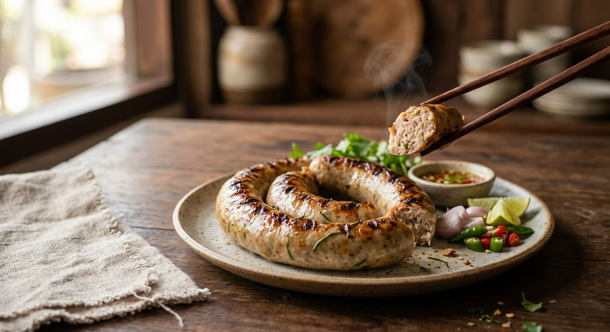

Pork kneaded with a pounded lemongrass-galangal-turmeric paste and slivered kaffir lime leaves, stuffed into casings and grilled low over charcoal — Chiang Mai's sausage, eaten with hot sticky rice.

The name is a job description. Aroifin explains it: อั่ว means to stuff, to insert, to push into the middle — sai ua is literally "stuffed intestine", pork and herbs packed into a casing and grilled. Like most northern food it began as preservation: the pork, aromatics and chillies keep for a day or two, longer refrigerated or vacuum-sealed, which is exactly how the market stalls now sell it.
The build starts with a paste pounded from dried chillies, lemongrass, galangal, turmeric, coriander roots, garlic, shallots, kaffir lime zest, shrimp paste and toasted coriander seeds with cumin — the north's aromatics, the ones that announce the sausage from three stalls away. That paste is kneaded into minced pork with fish sauce, light soy and sugar, then slivered kaffir lime leaves and chopped spring onion and coriander go in. Kapook and Aroifin share the same honest step before any stuffing happens: microwave a spoonful, taste it, and fix the seasoning while you still can.
Then the fire. Kapook's home cook bakes hers at 375°F, fifteen minutes a side, and admits her husband puts it in a sandwich while she insists on ข้าวเหนียวร้อน ๆ, hot sticky rice. Wongnai's recipe steams the sausages for twenty minutes first, then grills them low over charcoal. Kapook's liver version skips the steam and grills straight over the coals — ไฟเบา ๆ, low heat, because a hot fire bursts the casing. Every source agrees on that one thing: the fire must be patient.
| Thai | English | Amount |
|---|---|---|
| เนื้อหมูติดมัน | Pork belly, minced | 1 kg |
| เครื่องแกงไส้อั่ว | Sai ua curry paste | 3 tbsp |
| ซีอิ๊วขาว | Light soy sauce | 1 tbsp |
| น้ำปลา | Fish sauce | 2 tbsp |
| น้ำตาลทราย | Sugar | 1 tsp |
| ใบมะกรูดหั่นฝอย | Kaffir lime leaves, slivered | 3 tbsp |
| ต้นหอม ผักชีซอย | Spring onion and coriander, chopped | 1 cup |
| ไส้หมู | Pork casings | for stuffing |
| พริกแห้งเม็ดใหญ่ | Dried chillies (large), soaked | 2 |
| พริกขี้หนูแห้ง | Dried bird's eye chillies, soaked | 15 |
| เกลือ | Salt | to taste |
| ข่า | Galangal | 3 tbsp |
| ตะไคร้ | Lemongrass | 3 stalks |
| รากผักชี | Coriander roots | 3 tbsp |
| กระเทียม | Garlic | 1 large head |
| หอมแดง | Shallots | 6 |
| ผิวมะกรูด | Kaffir lime zest | 1 tbsp |
| กะปิ | Shrimp paste | 1 tsp |
| ขมิ้น | Turmeric | 2 tbsp |
| ลูกผักชี ยี่หร่าคั่วตำ | Toasted coriander seeds and cumin, pounded | 3 tbsp |
The selling batch (Aroifin): 1.5 kg minced pork with fat, 4 tbsp red curry paste (or the pounded paste), 1 tbsp turmeric powder, 3 tbsp oyster sauce, 3 tbsp fish sauce, 2 tbsp light soy, 1 tsp brown sugar, 2 tbsp slivered kaffir leaves, 1 cup spring onion and coriander — about 15 servings, vacuum-sealed for sale. The liver build (Kapook, ไส้อั่วตับ): 1 kg lean and 2 kg fatty mince with 2 kg chopped pork liver (1 kg liver per 1.5 kg pork), market-bought น้ำพริกแกงเมือง, MSG, and low charcoal only — no steaming. The steam-then-grill batch (Wongnai): 100 g shrimp paste and 200 g coriander per 1 kg pork, steamed 20 minutes, then low charcoal.
The cumin question. Kapook and Aroifin toast coriander seeds and cumin together and pound them into the paste; Wongnai's popular recipe toasts coriander seeds only, no cumin; Wongnai's second recipe skips the seeds entirely. The cumin-less versions lean harder on lemongrass and kaffir for the nose.
Shrimp paste. Kapook and Aroifin use a teaspoon. Wongnai's steam-then-grill recipe uses 100 g of กะปิ per 1 kg of pork — a tenfold difference, and the difference between a herb sausage and a funky one.
The casings. Four of five sources use real pork intestine, washed with salt, vinegar, flour or tapioca starch. Wongnai's most-read recipe uses ไส้เทียม — artificial casing — instead.
Store-bought paste. Aroifin lists red curry paste as a straight substitute for the pounded paste. Kapook allows it only with a condition: pound extra lemongrass, galangal and turmeric into it, or the sausage won't smell right. The liver version starts from market-bought น้ำพริกแกงเมือง and adjusts from there.
How it meets the fire. Wongnai steams 20 minutes, then grills low. The liver version grills straight over low charcoal — the author warns a hot fire bursts the casing. Kapook's home cook bakes at 375°F, 15 minutes a side. Aroifin says grill or fry. All agree on one rule: low heat.
Liver or not. The liver version adds chopped pork liver — 1 kg per 1.5 kg of mixed pork — for softness, and is open about its MSG. The plain versions keep the sausage pork-only.
This recipe is translated from the following Thai-language sources. Where they disagree, we've said so.
1. Kapook — "ไส้อั่วโฮมเมด อาหารเหนือพร้อมสูตรเครื่องแกง อร่อยสะอาดมั่นใจ" (the recipe used here; credited to Pantip member tukata001) — cooking.kapook.com
2. Aroifin — "วิธีทำ ไส้อั่ว ไส้แน่น ๆ หอมสมุนไพร ทำกินก็ฟิน ทำขายก็รุ่ง" (the name's etymology, the selling batch, storage tips) — aroifin.com
3. Kapook — "ไส้อั่วตับ อาหารเหนือทำเองได้ สูตรใส่ตับนุ่ม ๆ" (the liver build and the low-heat warning) — cooking.kapook.com
4. Wongnai — "สูตร ไส้อั่ว" by ชิมทั่วไทยว่างเมื่อไหร่เข้าครัว (the artificial-casing batch) — wongnai.com
5. Wongnai — "สูตร ไส้อั่วหมู" by Teerachad Tadinnjan (the steam-then-grill method and the heavy shrimp paste) — wongnai.com